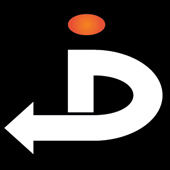

Progetto e sviluppo prodotti web e mobile a partire da esigenze reali. Unisco sviluppo full stack, consulenza e agenti AI per trasformare le idee in strumenti utili, curati e semplici da usare.
Anche le cose serie possono avere un lato elastico.
SVILUPPATORE DAL 2015 · CONSULENTE DAL 2023Un approccio pratico, dall’idea al rilascio. ↓
Progetti
GeoPieno
Un’app web e mobile che confronta i prezzi dei carburanti in Italia a partire dai dati pubblici del MIMIT. Aiuta a trovare le stazioni più convenienti nelle vicinanze e a pianificare le soste per il rifornimento lungo il viaggio.
Un’app che trasforma pensieri dettati o scritti in note e checklist organizzate. L’AI trascrive e inserisce i contenuti nella nota o nella lista giusta, per raccogliere le idee senza doverle riordinare manualmente.
Capire il problema. Definire le priorità. Costruire la soluzione.
Molte delle idee su cui lavoro nascono da un’esigenza che incontro in prima persona: un passaggio di troppo, un’informazione difficile da trovare, un’attività da automatizzare. È da queste osservazioni che comincio a ragionare sul prodotto.
Seguo i progetti dall’analisi al rilascio e ai miglioramenti successivi. Definisco le priorità in base a obiettivi, impatto e risorse disponibili, coordinando il lavoro per mantenere chiaro cosa serve e cosa fare prima.
Integro gli agenti AI nello sviluppo per esplorare soluzioni, scrivere codice e automatizzare attività ripetitive. Curo il processo e i test, verificando che il risultato risponda alle esigenze iniziali.
AI ModelsAI agentsMCPFullstack developmentCloud infrastructureWeb & mobileSQL / NoSQLBlockchain
01 ↗
Capire il problema
Chiarire esigenze, obiettivi e vincoli.
02 ↗
Definire le priorità
Valutare impatto e impegno, coordinando persone, strumenti e agenti AI.
03 ↗
Costruire la soluzione
Sviluppare, verificare e migliorare il prodotto.
03 / ESPERIENZA
Il mio percorso.
Dallo sviluppo in azienda alla consulenza e ai progetti personali.
2023 — OGGI
Sviluppatore software indipendente e consulente
Dal 2023 affianco lo sviluppo di prodotti personali alle attività di sviluppo software e consulenza per le aziende.
CONSULENZA
SET 2018 — 2023
Research & Development Manager
Logol AG
Ho lavorato allo sviluppo di un software gestionale per il settore legale, diventando poi Research & Development Manager dello stesso prodotto. Alla parte tecnica ho affiancato la guida del team, consolidando le mie capacità di coordinamento e leadership.
DIPENDENTE
MAG 2015 — AGO 2018
Software developer
FrameTECH S.r.l.
Ho lavorato allo sviluppo di un software per la gestione dei contact center e alla consulenza presso i clienti, nell’ambito dei call center tradizionali e web. Un’esperienza che mi ha insegnato a tradurre le esigenze operative in soluzioni software.
ESPERIENZA
2010 — 2015
Scienze e tecnologie informatiche
Università di Parma
Il percorso universitario mi ha fornito le basi teoriche e metodologiche per affrontare la programmazione, l’analisi dei problemi e lo sviluppo software.
FORMAZIONE
Ho lavorato con

04 / CONTATTI
Parliamo del tuo progetto.
Per un progetto, una consulenza o un confronto su un’idea, scrivimi.